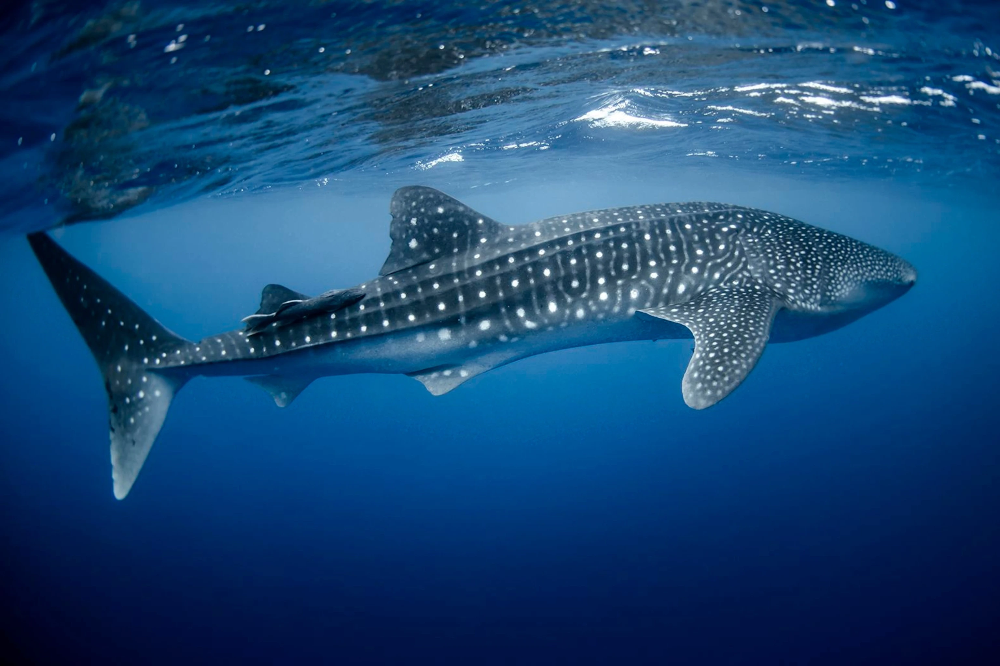

The Most Endangered Marine Animals
Vaquita
The vaquita is the world's rarest sea mammal, as well as one of the world's most endangered creatures. They are a rare kind of porpoise with a short, chunky body and a spherical head, and their name means "little cow" in Spanish. Their eyes and lips have black lines on them, creating the impression that they are wearing makeup. The vaquita is highly endangered and on the verge of extinction, with fewer than 30 individuals remaining. They only reside in one body of water, the Gulf of California, and spawn only every two years, but humans are the ones who have wreaked the most havoc on the vaquita population.
Hawksbill Turtle

The Hawksbill sea turtle is among the tiniest turtle species, with elegant gold and brown striped shells (known as tortoiseshell). The Hawksbill sea turtle is the world's most endangered turtle species, classed as critically endangered by the International Union for Conservation of Nature (IUCN), with only an estimated global population of 8,000 and only 1,000 nesting females. Turtles are unfortunately hunted for their gorgeous shells, which are unlawfully sold to make jewellery and other items. Tortoiseshell was banned for commercial use in 1973, but products such as earrings, necklaces, sunglasses, and bekko combs (used in traditional Japanese bridal gowns) are still freely available across the Caribbean, Asia, and Central America.
Wale Shark
Whale sharks are the world's largest fish, growing up to 18 metres long, 19,000 kg in weight, and living for 70 to 130 years. The polka-dot marks on the body of each whale shark are unique, just like a human fingerprint. These gentle giants have jaws about a metre wide, with more than 350 rows of teeth, but they primarily graze on plankton, filtering it through their mouths. The IUCN Red List of Threatened Species has listed these lovely creatures as endangered as of 2016, citing a sharp decline in sightings. Commercial fishing and illegal poaching are mostly to blame for their extinction, with China being the primary market for their meat, fins, and oil, as well as their skin for bags.
Sea Otter
The beautiful sea otter is one of the world's tiniest marine mammals, and they play an important part in our ecology by eating on sea urchins, allowing kelp forests to grow. They're a wonderful species with a diverse set of abilities. Sea otters are one of the few species on Earth that use tools to survive (they use rocks to hammer shells open); they are the only marine mammal that can flip boulders over on the sea floor; they consume between 25 and 40% of their body weight every day; and they adorably hold hands while sleeping to keep from drifting apart. With roughly 1 million hairs per square inch, they have the densest fur of any species on the planet. Unfortunately, due to extensive human poaching for sea otter pelts, their magnificent fur is also their greatest threat. Their population formerly counted in the hundreds of thousands, but due to the fur trade, it has been reduced to less than 2,000. Since the international ban on large-scale commercial hunting was enacted in 1911, the population has grown to little over 100,000 people. Unfortunately, the IUCN still lists the sea otter as vulnerable due to other dangers such as pollution, oil spills, and entanglement in fishing gear.
River Dolphins

The Irrawaddy river dolphin, Ganges river dolphin, pink Amazon river dolphin, and Yangtze finless porpoise are all critically endangered river dolphin species. There are about 6,000 Irrawaddy river dolphins left, with around 90 remaining in Southeast Asia's Mekong River population, and around 9,000 pink Amazon river dolphins. Only about 30 Ganges river dolphins remain in the Ganga, and a 2018 census of the Yangtze finless porpoise revealed a population of only 1,012 individuals. Habitat destruction, illicit poaching, dam construction and irrigation projects, and entanglement in fishing gear are only a few of the concerns threatening this species.
Blue Whale

The blue whale is the world's largest living mammal, measuring more than 100 feet in length and weighing over 200 tonnes. It belongs to the baleen whale family. Blue whales are observed migrating from both poles in the oceans throughout the world, and there are at least three subspecies. Whales, which are at the top of the food chain, play an important role in sustaining a healthy marine environment. Unfortunately, despite an international ban enacted in 1966, unsustainable commercial hunting has resulted in a severe reduction in its number, posing a threat to its very existence. The Blue Whale has a global population of 10,000–25,000 individuals, according to the IUCN.